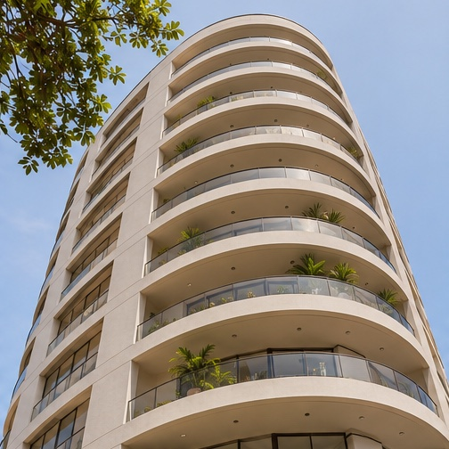

Edificación residencial
Diseño y construcción de edificios multifamiliares y viviendas.
NOSOTROS
Constructora Moreno Linch S.A.C. nació en Trujillo en 2003 y ha ejecutado 44 obras inmobiliarias, comerciales y públicas.

Diseño y construcción de edificios multifamiliares y viviendas.
Experiencia en proyectos para empresas e instituciones.
Entregar viviendas, comercios e infraestructura con diseños innovadores, construcciones seguras y buenos acabados. Acompañamos a nuestros clientes durante la venta y después de la entrega.

NUESTRA VISIÓN
Buscamos que cada proyecto que diseñamos y construimos aporte valor a nuestros clientes.
